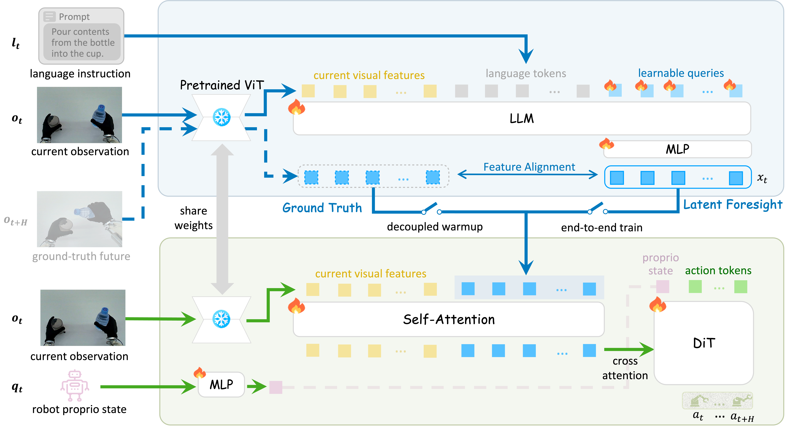
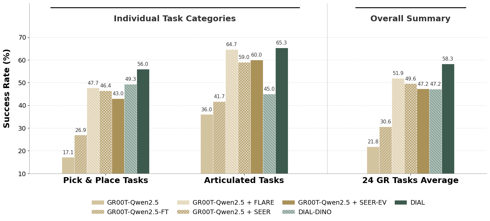
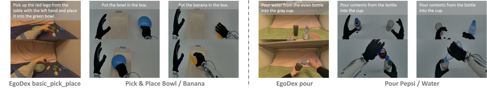
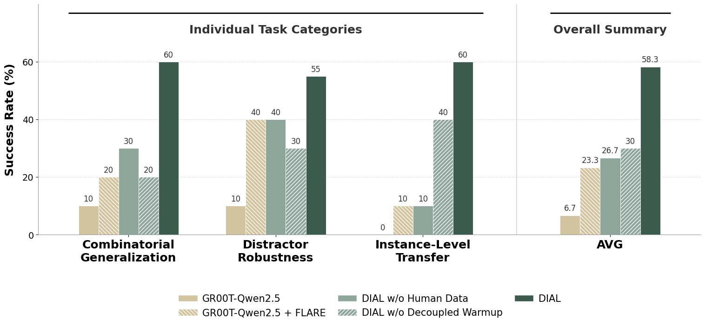

The development of Vision-Language-Action (VLA) models has been significantly accelerated by pre-trained Vision-Language Models (VLMs). However, most existing end-to-end VLAs treat the VLM primarily as a multimodal encoder, directly mapping vision-language features to low-level actions. This paradigm underutilizes the VLM's potential role in high-level decision making and introduces training instability, frequently causing degradation of its rich semantic representations.
To address these limitations, we introduce DIAL (Decoupling Intent and Action via Latent World Modeling), a framework that bridges high-level decision making and low-level motor execution through a differentiable latent intent bottleneck. Specifically, a VLM-based System-2 performs latent world modeling by synthesizing the latent visual foresight within the native feature space of the VLM's vision encoder; this foresight explicitly encodes the VLM's intent and serves as the structural bottleneck. A lightweight System-1 policy then decodes this predicted intent together with the current observation into precise robot actions via latent inverse dynamics.
Extensive experiments on the RoboCasa GR1 Tabletop benchmark demonstrate that DIAL establishes a new state of the art, achieving superior performance with 10× fewer demonstrations than prior methods. Furthermore, by leveraging heterogeneous human demonstrations, DIAL learns physically grounded manipulation priors and exhibits robust zero-shot generalization to unseen objects and novel configurations during real-world deployment on a humanoid robot.
Pre-trained VLMs provide a powerful cognitive foundation for robotic manipulation, yet translating their high-level intent into precise motor control remains an open challenge. As illustrated below, existing approaches fall into two paradigms, each with a fundamental limitation. Hierarchical planners prompt VLMs to generate text or code plans for a separate low-level controller—but this non-differentiable interface blocks action gradients from refining the VLM's physical understanding. End-to-end VLAs directly predict actions, yet they often reduce the VLM to a passive encoder; even with auxiliary foresight objectives, the absence of a strict structural bottleneck still permits shortcut learning that bypasses true intent grounding. DIAL resolves this dilemma by introducing a differentiable latent bottleneck that requires the policy to bridge the gap between current visual features and the VLM's predicted latent foresight, ensuring that execution is inherently anchored to the VLM's intent.

DIAL adopts a dual-system architecture that decouples high-level reasoning from low-level execution through a differentiable latent intent bottleneck. As shown below, System-2 (the “Brain”), built upon a pre-trained VLM backbone, performs latent world modeling to synthesize a latent intent that predicts the future visual state in the VLM’s native ViT feature space. System-1 (the “Cerebellum”) resolves the gap between the current observation and this intent to produce motor commands, acting as a latent inverse dynamics model. This design elevates the VLM from a passive encoder to an active decision maker whose goal-directed foresight structurally governs downstream execution. Both systems share the same frozen ViT, establishing a unified latent space that naturally supports independent decoupled warmup (as indicated by the switches in the figure) followed by seamless end-to-end optimization, where action-aware gradients flow back through the latent intent into the VLM.

The VLM processes the current visual observation and language instruction. Learnable query tokens are appended to the LLM sequence; their output representations are projected through an MLP head to synthesize the latent intent—a spatially structured prediction of the future visual state, trained via MSE alignment with the ground-truth ViT features of the future observation.
A lightweight self-attention module fuses the current ViT features with the predicted latent intent, producing a spatially-aware conditioning signal. A DiT-based decoder then takes this signal via cross-attention, along with the projected proprioceptive state and noisy action tokens, to generate action chunks via flow matching—resolving state-transition dynamics entirely in latent space.
Stage 1 pre-trains both systems independently: System-2 learns visual foresight via the world modeling loss, while System-1 learns sensorimotor control conditioned on ground-truth future features. Stage 2 unifies the pipeline: System-1 is conditioned on System-2's synthesized intent, enabling gradients to flow back through the latent bottleneck and into the VLM, forcing the intent to become explicitly action-aware.
We evaluate DIAL through five core research questions spanning performance, architecture, scalability, real-world robustness, and interpretability.
On the full RoboCasa GR1 Tabletop benchmark (1,000 trajectories per task), DIAL achieves 70.2% average success rate, substantially outperforming the strongest baseline FLARE (55.0%) and advanced VLA architectures such as GR00T-N1.6 (47.6%). The consistent margin across both Pick & Place (68.9%) and Articulated Tasks (74.3%) highlights DIAL's balanced capability across distinct task categories.

Under a strict few-shot setting (100 trajectories per task), DIAL reaches 58.3%, surpassing FLARE (55.0%) trained with 10× more data, demonstrating strong sample efficiency. Systematic ablations further reveal three essential design choices: (i) explicit world modeling grounds the VLM in future physical states; (ii) DIAL's structural bottleneck prevents shortcut learning where loosely coupled variants (SEER, FLARE-style) plateau below 52%; (iii) operating in the VLM's native ViT feature space is critical, as replacing it with DINO-v2 drops performance to 47.2% due to feature-space misalignment between the two systems.

By incorporating cross-embodiment human demonstrations from the EgoDex basic_pick_place subset, DIAL boosts Pick & Place success from 56.0% to 60.8% and substantially improves OOD generalization: +6.3% on unseen objects, +5.7% on unseen combinations, and +3.1% on unseen appearances. The average OOD success rate rises from 46.2% to 51.2%, demonstrating effective cross-embodiment learning. Since this subset contains only rearrangement interactions without articulated objects, Articulated Tasks see no improvement due to domain mismatch, while Pick & Place and OOD scenarios benefit substantially.

We validate DIAL on the IRON-R01 humanoid robot with two tasks designed analogous to representative EgoDex subsets for cross-embodiment learning: Pick & Place (mimicking EgoDex basic_pick_place) and Pouring (mimicking EgoDex pour). DIAL achieves 77.5% in-distribution success and 58.3% OOD success. Decoupled warmup is critical: removing it drops ID performance to 57.5% and OOD from 58.3% to 30.0%. Human data pre-training is equally vital, with its removal degrading OOD success from 58.3% to 26.7%.



We visualize the latent features of the current observation, ground-truth future, and predicted foresight by mapping their first three PCA components to RGB. The predicted foresight closely mirrors the ground-truth future in task-relevant regions while diverging from the current observation where manipulation is expected. The last column shows per-patch cosine distance between foresight and current features, with warmer colors indicating greater anticipated change. These results confirm that System-2 actively anticipates meaningful state transitions rather than merely reconstructing the current scene, generating a coherent “visual roadmap” for System-1.

@inproceedings{dial2025,
title = {DIAL: Decoupling Intent and Action via Latent World Modeling for End-to-End VLA},
author = {Authors (placeholder)},
year = {2025}
}